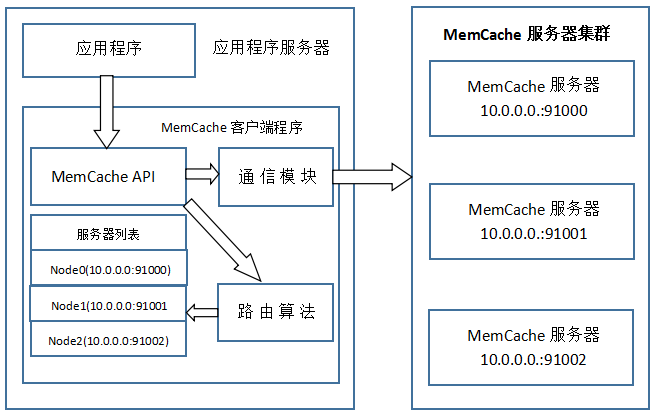
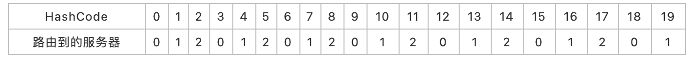
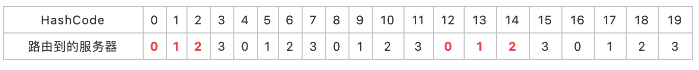
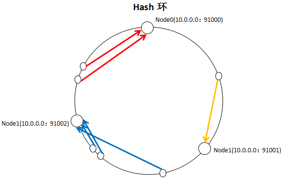
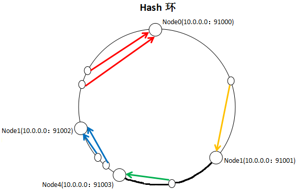
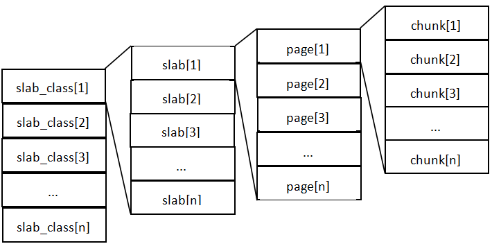
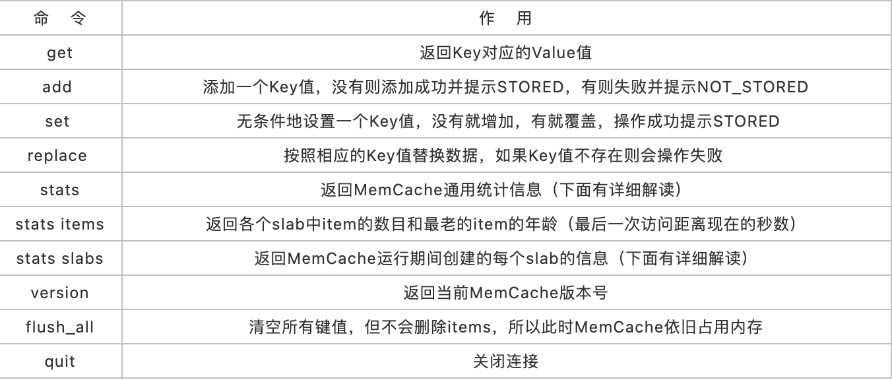
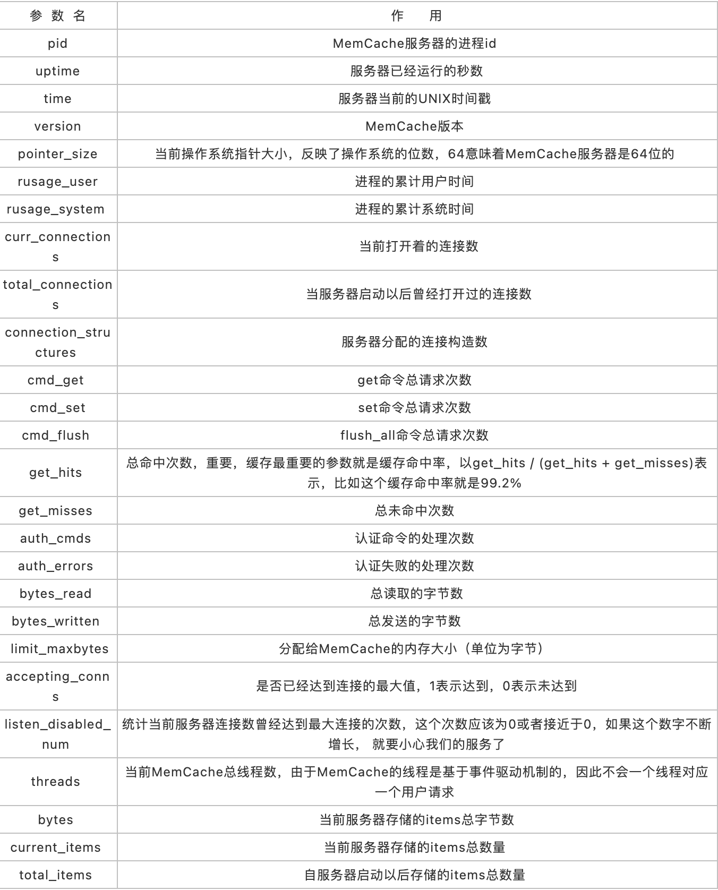
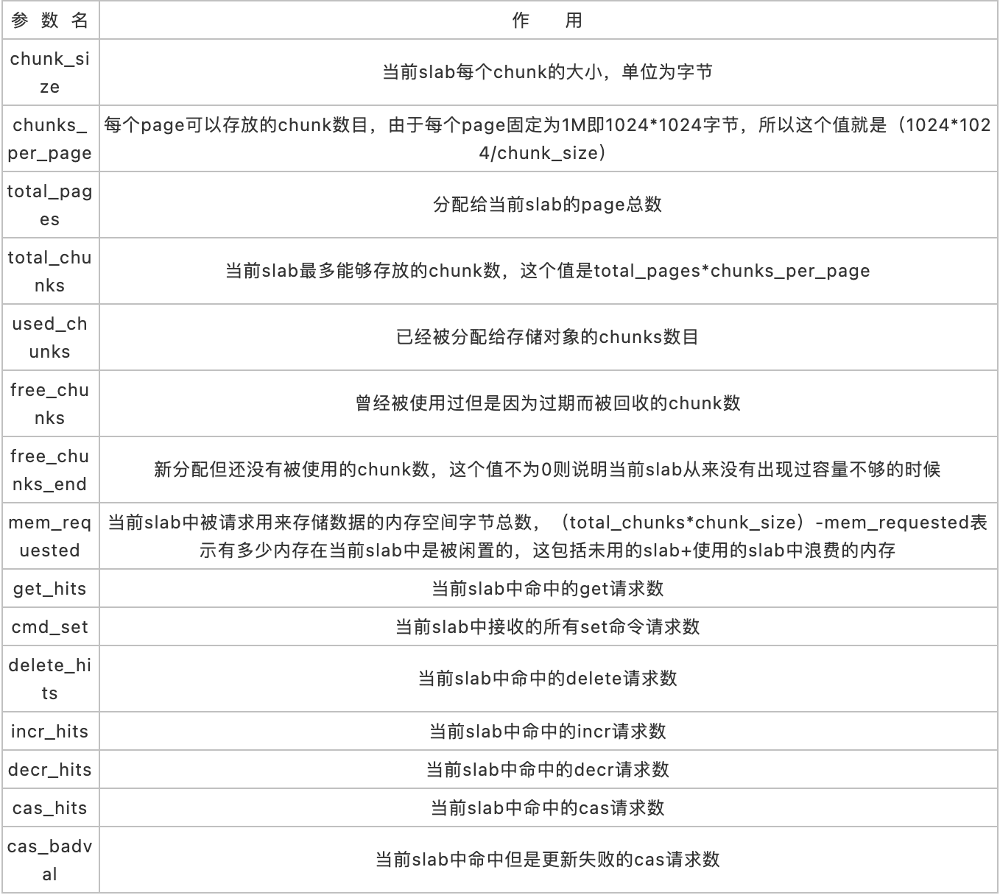

Memcached 001超详细解读
MemCache是什么
MemCache是一个自由、源码开放、高性能、分布式的分布式内存对象缓存系统，用于动态Web应用以减轻数据库的负载。它通过在内存中缓存数据和对象来减少读取数据库的次数，从而提高了网站访问的速度。MemCaChe是一个存储键值对的HashMap，在内存中对任意的数据（比如字符串、对象等）所使用的key-value存储，数据可以来自数据库调用、API调用，或者页面渲染的结果。MemCache设计理念就是小而强大，它简单的设计促进了快速部署、易于开发并解决面对大规模的数据缓存的许多难题，而所开放的API使得MemCache能用于Java、C/C++/C#、Perl、Python、PHP、Ruby等大部分流行的程序语言。
另外，说一下MemCache和MemCached的区别：
- MemCache是项目的名称
- MemCached是MemCache服务器端可以执行文件的名称
MemCache访问模型
为了加深理解，我模仿着原阿里技术专家李智慧老师《大型网站技术架构 核心原理与案例分析》一书MemCache部分，自己画了一张图：  特别澄清一个问题，MemCache虽然被称为"分布式缓存"，但是MemCache本身完全不具备分布式的功能，MemCache集群之间不会相互通信（与之形成对比的，比如JBoss Cache，某台服务器有缓存数据更新时，会通知集群中其他机器更新缓存或清除缓存数据），所谓的"分布式"，完全依赖于客户端程序的实现，就像上面这张图的流程一样。
同时基于这张图，理一下MemCache一次写缓存的流程：
- 应用程序输入需要写缓存的数据
- API将Key输入路由算法模块，路由算法根据Key和MemCache集群服务器列表得到一台服务器编号
- 由服务器编号得到MemCache及其的ip地址和端口号
- API调用通信模块和指定编号的服务器通信，将数据写入该服务器，完成一次分布式缓存的写操作
读缓存和写缓存一样，只要使用相同的路由算法和服务器列表，只要应用程序查询的是相同的Key，MemCache客户端总是访问相同的客户端去读取数据，只要服务器中还缓存着该数据，就能保证缓存命中。
这种MemCache集群的方式也是从分区容错性的方面考虑的，假如Node2宕机了，那么Node2上面存储的数据都不可用了，此时由于集群中Node0和Node1还存在，下一次请求Node2中存储的Key值的时候，肯定是没有命中的，这时先从数据库中拿到要缓存的数据，然后路由算法模块根据Key值在Node0和Node1中选取一个节点，把对应的数据放进去，这样下一次就又可以走缓存了，这种集群的做法很好，但是缺点是成本比较大。
一致性Hash算法
从上面的图中，可以看出一个很重要的问题，就是对服务器集群的管理，路由算法至关重要，就和负载均衡算法一样，路由算法决定着究竟该访问集群中的哪台服务器，先看一个简单的路由算法。
1、余数Hash
比方说，字符串str对应的HashCode是50、服务器的数目是3，取余数得到1，str对应节点Node1，所以路由算法把str路由到Node1服务器上。由于HashCode随机性比较强，所以使用余数Hash路由算法就可以保证缓存数据在整个MemCache服务器集群中有比较均衡的分布。
如果不考虑服务器集群的伸缩性，那么余数Hash算法几乎可以满足绝大多数的缓存路由需求，但是当分布式缓存集群需要扩容的时候，就难办了。
就假设MemCache服务器集群由3台变为4台吧，更改服务器列表，仍然使用余数Hash，50对4的余数是2，对应Node2，但是str原来是存在Node1上的，这就导致了缓存没有命中。如果这么说不够明白，那么不妨举个例子，原来有HashCode为0~19的20个数据，那么：  现在我扩容到4台，加粗标红的表示命中： 
如果我扩容到20+的台数，只有前三个HashCode对应的Key是命中的，也就是15%。当然这只是个简单例子，现实情况肯定比这个复杂得多，不过足以说明，使用余数Hash的路由算法，在扩容的时候会造成大量的数据无法正确命中（其实不仅仅是无法命中，那些大量的无法命中的数据还在原缓存中在被移除前占据着内存）。这个结果显然是无法接受的，在网站业务中，大部分的业务数据度操作请求上事实上是通过缓存获取的，只有少量读操作会访问数据库，因此数据库的负载能力是以有缓存为前提而设计的。当大部分被缓存了的数据因为服务器扩容而不能正确读取时，这些数据访问的压力就落在了数据库的身上，这将大大超过数据库的负载能力，严重的可能会导致数据库宕机。
这个问题有解决方案，解决步骤为：
- 在网站访问量低谷，通常是深夜，技术团队加班，扩容、重启服务器
- 通过模拟请求的方式逐渐预热缓存，使缓存服务器中的数据重新分布
2、一致性Hash算法
一致性Hash算法通过一个叫做一致性Hash环的数据结构实现Key到缓存服务器的Hash映射，看一下我自己画的一张图： 
具体算法过程为：先构造一个长度为232的整数环（这个环被称为一致性Hash环），根据节点名称的Hash值（其分布为[0, 232-1]）将缓存服务器节点放置在这个Hash环上，然后根据需要缓存的数据的Key值计算得到其Hash值（其分布也为[0, 232-1]），然后在Hash环上顺时针查找距离这个Key值的Hash值最近的服务器节点，完成Key到服务器的映射查找。
就如同图上所示，三个Node点分别位于Hash环上的三个位置，然后Key值根据其HashCode，在Hash环上有一个固定位置，位置固定下之后，Key就会顺时针去寻找离它最近的一个Node，把数据存储在这个Node的MemCache服务器中。使用Hash环如果加了一个节点会怎么样，看一下： 
看到我加了一个Node4节点，只影响到了一个Key值的数据，本来这个Key值应该是在Node1服务器上的，现在要去Node4了。采用一致性Hash算法，的确也会影响到整个集群，但是影响的只是加粗的那一段而已，相比余数Hash算法影响了远超一半的影响率，这种影响要小得多。更重要的是，集群中缓存服务器节点越多，增加节点带来的影响越小，很好理解。换句话说，随着集群规模的增大，继续命中原有缓存数据的概率会越来越大，虽然仍然有小部分数据缓存在服务器中不能被读到，但是这个比例足够小，即使访问数据库，也不会对数据库造成致命的负载压力。
至于具体应用，这个长度为232的一致性Hash环通常使用二叉查找树实现，至于二叉查找树，就是算法的问题了，可以自己去查询相关资料。
MemCache实现原理
首先要说明一点，MemCache的数据存放在内存中，存放在内存中个人认为意味着几点：
- 访问数据的速度比传统的关系型数据库要快，因为Oracle、MySQL这些传统的关系型数据库为了保持数据的持久性，数据存放在硬盘中，IO操作速度慢
- MemCache的数据存放在内存中同时意味着只要MemCache重启了，数据就会消失
- 既然MemCache的数据存放在内存中，那么势必受到机器位数的限制，这个之前的文章写过很多次了，32位机器最多只能使用2GB的内存空间，64位机器可以认为没有上限
然后我们来看一下MemCache的原理，MemCache最重要的莫不是内存分配的内容了，MemCache采用的内存分配方式是固定空间分配，还是自己画一张图说明： 
这张图片里面涉及了slab_class、slab、page、chunk四个概念，它们之间的关系是：
- MemCache将内存空间分为一组slab
- 每个slab下又有若干个page，每个page默认是1M，如果一个slab占用100M内存的话，那么这个slab下应该有100个page
- 每个page里面包含一组chunk，chunk是真正存放数据的地方，同一个slab里面的chunk的大小是固定的
- 有相同大小chunk的slab被组织在一起，称为slab_class
MemCache内存分配的方式称为allocator，slab的数量是有限的，几个、十几个或者几十个，这个和启动参数的配置相关。
MemCache中的value过来存放的地方是由value的大小决定的，value总是会被存放到与chunk大小最接近的一个slab中，比如slab[1]的chunk大小为80字节、slab[2]的chunk大小为100字节、slab[3]的chunk大小为128字节（相邻slab内的chunk基本以1.25为比例进行增长，MemCache启动时可以用-f指定这个比例），那么过来一个88字节的value，这个value将被放到2号slab中。放slab的时候，首先slab要申请内存，申请内存是以page为单位的，所以在放入第一个数据的时候，无论大小为多少，都会有1M大小的page被分配给该slab。申请到page后，slab会将这个page的内存按chunk的大小进行切分，这样就变成了一个chunk数组，最后从这个chunk数组中选择一个用于存储数据。
如果这个slab中没有chunk可以分配了怎么办，如果MemCache启动没有追加-M（禁止LRU，这种情况下内存不够会报Out Of Memory错误），那么MemCache会把这个slab中最近最少使用的chunk中的数据清理掉，然后放上最新的数据。针对MemCache的内存分配及回收算法，总结三点：
- MemCache的内存分配chunk里面会有内存浪费，88字节的value分配在128字节（紧接着大的用）的chunk中，就损失了30字节，但是这也避免了管理内存碎片的问题
- MemCache的LRU算法不是针对全局的，是针对slab的
- 应该可以理解为什么MemCache存放的value大小是限制的，因为一个新数据过来，slab会先以page为单位申请一块内存，申请的内存最多就只有1M，所以value大小自然不能大于1M了
再总结MemCache的特性和限制
上面已经对于MemCache做了一个比较详细的解读，这里再次总结MemCache的限制和特性：
- MemCache中可以保存的item数据量是没有限制的，只要内存足够
- MemCache单进程在32位机中最大使用内存为2G，这个之前的文章提了多次了，64位机则没有限制
- Key最大为250个字节，超过该长度无法存储
- 单个item最大数据是1MB，超过1MB的数据不予存储
- MemCache服务端是不安全的，比如已知某个MemCache节点，可以直接telnet过去，并通过flush_all让已经存在的键值对立即失效
- 不能够遍历MemCache中所有的item，因为这个操作的速度相对缓慢且会阻塞其他的操作
- MemCache的高性能源自于两阶段哈希结构：第一阶段在客户端，通过Hash算法根据Key值算出一个节点；第二阶段在服务端，通过一个内部的Hash算法，查找真正的item并返回给客户端。从实现的角度看，MemCache是一个非阻塞的、基于事件的服务器程序
- MemCache设置添加某一个Key值的时候，传入expiry为0表示这个Key值永久有效，这个Key值也会在30天之后失效，见memcache.c的源代码：
|
|
这个失效的时间是memcache源码里面写的，开发者没有办法改变MemCache的Key值失效时间为30天这个限制
MemCache指令汇总
上面说过，已知MemCache的某个节点，直接telnet过去，就可以使用各种命令操作MemCache了，下面看下MemCache有哪几种命令： 
stats指令解读
stats是一个比较重要的指令，用于列出当前MemCache服务器的状态，拿一组数据举个例子：
- STAT pid 1023
- STAT uptime 21069937
- STAT time 1447235954
- STAT version 1.4.5
- STAT pointer_size 64
- STAT rusage_user 1167.020934
- STAT rusage_system 3346.933170
- STAT curr_connections 29
- STAT total_connections 21
- STAT connection_structures 49
- STAT cmd_get 49
- STAT cmd_set 7458
- STAT cmd_flush 0
- STAT get_hits 7401
- STAT get_misses 57..（delete、incr、decr、cas的hits和misses数，cas还多一个badval）
- STAT auth_cmds 0
- STAT auth_errors 0
- STAT bytes_read 22026555STAT bytes_written 8930466STA
这些参数反映着MemCache服务器的基本信息，它们的意思是： 
stats slab指令解读
如果对上面的MemCache存储机制比较理解了，那么我们来看一下各个slab中的信息，还是拿一组数据举个例子：
- STAT1:chunk_size 96
- …
- STAT 2:chunk_size 144
- STAT 2:chunks_per_page 7281
- STAT 2:total_pages 7
- STAT 2:total_chunks 50967
- STAT 2:used_chunks 45197
- STAT 2:free_chunks 1
- STAT 2:free_chunks_end 5769
- STAT 2:mem_requested 6084638
- STAT 2:get_hits 48084
- STAT 2:cmd_set 59588271
- STAT 2:delete_hits 0
- STAT 2:incr_hits 0
- STAT 2:decr_hits 0
- STAT 2:cas_hits 0
- STAT 2:cas_badval 0
- …
- STAT 3:chunk_size 216
- …
首先看到，第二个slab的chunk_size（144）/第一个slab的chunk_size（96）=1.5，第三个slab的chunk_size（216）/第二个slab的chunk_size（144）=1.5，可以确定这个MemCache的增长因子是1.5，chunk_size以1.5倍增长。然后解释下字段的含义： 
看到这个命令的输出量很大，所有信息都很有作用。举个例子吧，比如第一个slab中使用的chunks很少，第二个slab中使用的chunks很多，这时就可以考虑适当增大MemCache的增长因子了，让一部分数据落到第一个slab中去，适当平衡两个slab中的内存，避免空间浪费。
MemCache的Java实现实例
讲了这么多，作为一个Java程序员，怎么能不写写MemCache的客户端的实现呢？MemCache的客户端有很多第三方jar包提供了实现，其中比较好的当属XMemCached了，XMemCached具有效率高、IO非阻塞、资源耗费少、支持完整的协议、允许设置节点权重、允许动态增删节点、支持JMX、支持与Spring框架集成、使用连接池、可扩展性好等诸多优点，因而被广泛使用。这里利用XMemCache写一个简单的MemCache客户单实例，也没有验证过，纯属抛砖引玉：
|
|